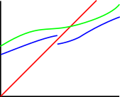
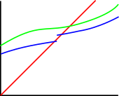

| If you shine a beam (\(g\)) up at two continuous barriers, and one barrier (\(f_1\)) is always on top of the other (\(f_2\)), then the beam will strike the barrier on the bottom first. | |
| To strike the top barrier first, the beam has to make it through a gap in the bottom barrier without striking it. This kind of gap doesn't work because \(f_1\) is increasing. |  |
| And this kind of gap doesn't work because to fly through it, the beam would have to travel to the left, which it can't do because it's a continuous function of \(x\). Even if we wiggle the beam a bit, it can't go left. So even if we allow for discontinuities, the beam can't get through. |  |